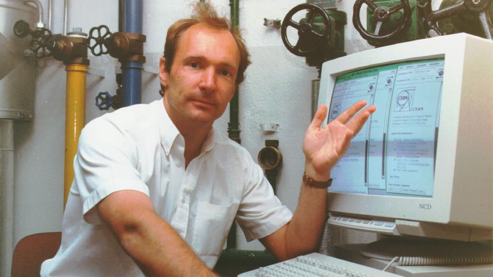
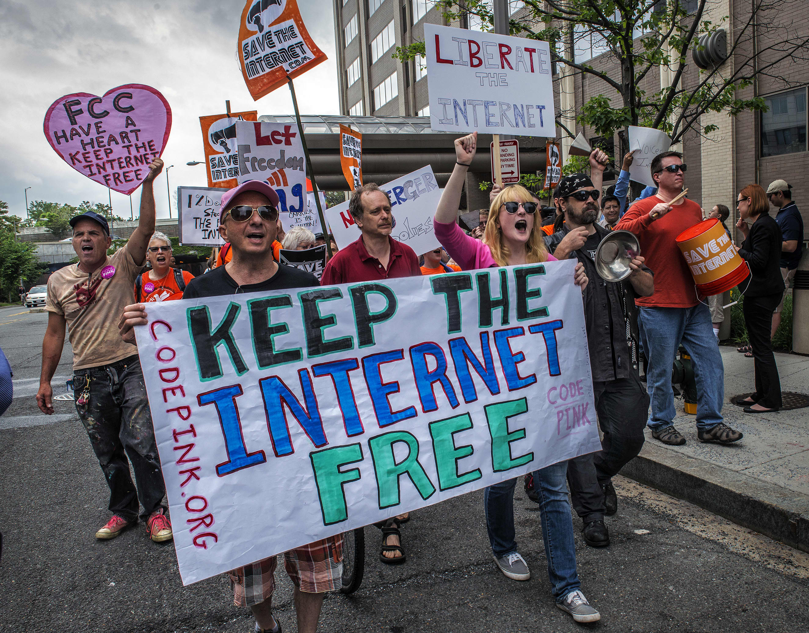
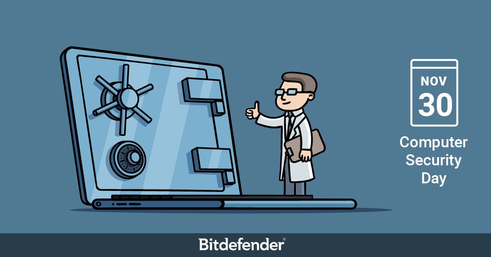

The Father Speaks
Live The Web is an article written by Tim Berners-Lee, the creator of the world wide Web. While it was published almost 13 years ago,
what he writes abous is still very crucial and relevant to today's net reality.

Universality
The reason why the web works is because of its use of protocols that ensure data can be seen on any device. It's a
"Standard" so that any device view "stuff". As the web evolves, it is central that old websites and information
are still able to be seen by new computers, and that newwebsites can also be seen by old computers.
To me, it seems that the underlying philosophy stems from the modernist notions of modularity and accessibility.
Since the web is essentially the vehicle through which information flows, it is paramount to protect its universality
as any party that tampers with it is essentially messing with free speech. Net Neutrality is important to protect,
as otherwise large (commercial, political, or otherwise) parties can bias the system for their own benefit.

Privacy Protection
With that, Berners-Lee also speaks about the importance of user privacy. We are in the midst of a data war, in which our
online habits are being tracked for monetary gain. Somewhere out there on the internet, there is a datasheet
that can describe who I am better that I can. It knows all my devices and it knows what I like and don't like.
It can pretty much sell me what it wants, and I don't know if im aware of it. Spooooooky stuff. Anyways, Berners-Lee
wants to put a stop to this as obviously, this is wildly irresponsible and can easily be used to manipulate and sway public
opinion (The 2016 American Election for example). What started as something to connect human knowledge is now a tool for control.
